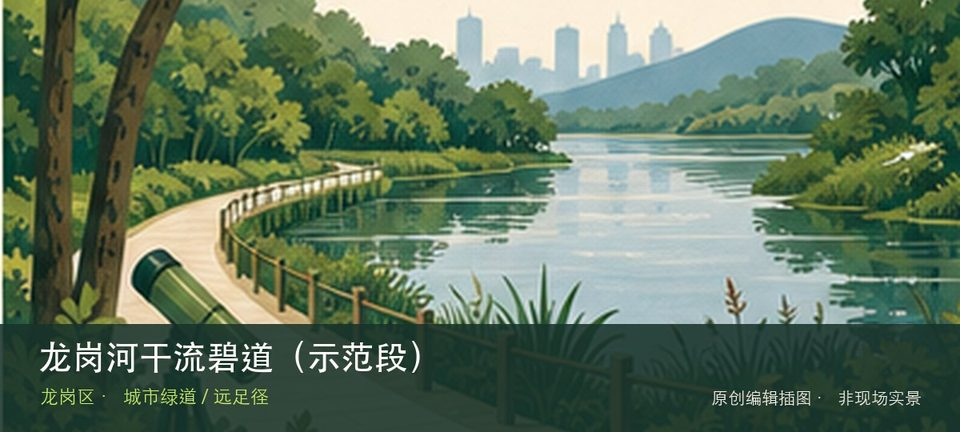

适合谁
适合有基础步行体力、愿意按天气调整路线的人；行动不便者应只选择平缓开放段。

SHENZHEN GUIDE · 326
龙岗街道龙园片区，吉祥南路桥至龙园福宁桥 · 城市绿道 / 远足径
龙岗河干流碧道（示范段）位于龙岗街道龙园片区，吉祥南路桥至龙园福宁桥，约4.6公里的滨水示范段以客家文化和多元生境重塑龙岗河岸，串联U梦绿谷、造梦坞、珍珠滩、跃鳞湾、龙鳞水岸与多座主题驿站。若只匆匆经过容易错过重点，U梦绿谷与造梦坞与珍珠滩和跃鳞湾恰好构成最有辨识度的观察顺序。现场不必追求一次走完，先在U梦绿谷与造梦坞与珍珠滩和跃鳞湾之间确定主线，再按体力、日照和天气保留折返方案。山地、滨水或林下路面会随降雨改变，当天预警和开放边界始终比旧轨迹更优先。
WHY GO
适合有基础步行体力、愿意按天气调整路线的人；行动不便者应只选择平缓开放段。
第一次只选吉祥南路桥至龙园附近的一段，把U梦绿谷、珍珠滩和一座主题驿站串起来；记住进入时的桥名，走到预定节点便原路或就近退出。
地铁3号线龙城广场站或双龙站可作为到达龙园片区的换乘点，再按吉祥南路桥、迴龙桥或福宁桥选择入口；不必一次走完全段。
沿线未公布统一专用停车容量；自驾可使用龙园公园及龙岗老城正规公共停车场后步行进入，赛事或活动管制时服从临时交通组织。
10月至次年4月适合长距离滨河慢行；夏季宜早晚分段，暴雨或上游泄洪提示期间远离亲水平台和低洼滩地。
NEARBY IDEAS
 编辑配图·非现场实景
编辑配图·非现场实景
深圳市隐秀高尔夫博物馆位于宝龙，球具演变、运动规则和俱乐部文化构成小众体育专题，场馆位于特定运营空间，社会参观条件需确认。
 编辑配图·非现场实景
编辑配图·非现场实景
龙城公园位于龙岗中心城，山体、台阶和中心城视野提供一小时左右的短登高，社区入口多但不同入口的坡度与返程方向差异明显。
 授权实景图
授权实景图
龙城公园绿道位于龙城公园闭合环线，新建约8.6公里并连接原有4.4公里的公园绿道，以城市山体、湖景和运动节点构成闭合慢行网络。